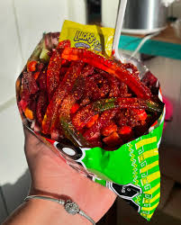
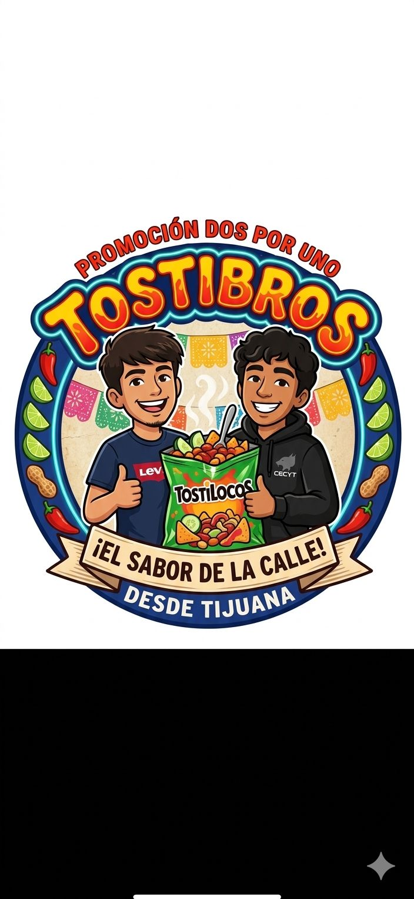

Tostilocos Clásicos

Incluyen cueritos, cacahuates, chamoy y salsa. Cuestan 50$ pesos
Tostilocos

Con salsa extra y mucho chamoy. Cuestan 50$ pesos

Los tostilocos son una botana mexicana hecha con Tostitos, cueritos, cacahuates, chamoy, limón y salsa picante.
Incluyen cueritos, cacahuates, chamoy y salsa. Cuestan 50$ pesos

Con salsa extra y mucho chamoy. Cuestan 50$ pesos
Ubicación: Tijuana, Baja California, CECYTE VILLA DEL SOL
Teléfono: 123-456-7890
Email: Tostibross@gmail.com